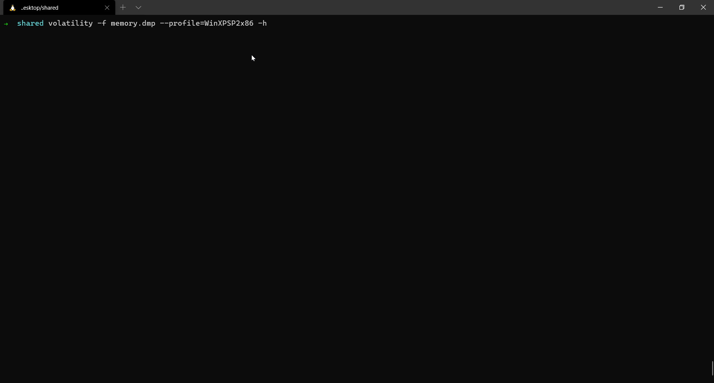

Volatility is a python based command line tool that helps in analyzing virtual memory dumps. It provides a very good way to understand the importance as well as the complexities involved in Memory Forensics.
Install
sudo apt install volatility -y
If you are Using Windows you can download the executable here
Offset
The start of a file or the start of a memory address is called offset(by default, virtual offset).
PID
When a process is started, it is given a unique number called process ID (PID) that identifies that process to the system. If you ever need to kill a process, for example, you can refer to it by its PID. Since each PID is unique, there is no ambiguity or risk of accidentally killing the wrong process (unless you enter the wrong PID).
PPID
The PPID is the PID of the process’s parent. To understand this, let us look at an example. Consider a process A with a PID 1. Suppose this process calls upon another process say B. So as far as this scenario is considered, B is actually a child process of A. So the PPID of B will be the PID of A.
Plugins
Listing out other plugins
Volatility is capable of doing a lot of things. Some of them include but not limited to:
- Detect active connections
- Detect potential malware in the memory dump
- List all the open files in the system
- If they aren’t paged out, you can even extract the files.
- Dump registry hives
- Extract browser history
- List loaded drivers etc…
This is just a small list of what volatility can do. If you would like to know more details you can try executing this on your memory dump and volatility will list out all the plugins supported for the profile you mentioned.
volatility -f memory.dmp --profile=WinXPSP2x86 -h

Browser History plugins
For extracting the browser history, volatility doesn't come with those plugins for extracting history from Memory dumps. You need to clone/download these additional plugins from this github repo and provide the path where you download these additional plugins.
volatility --plugins=/Path/to/the/cloned/repo -f memory.dmp --profile=WinXPSP2x86 -h
On executing the above command by replacing the /Path/to/the/cloned/repo to your path, you can see the additional plugins listed in the list of plugins you see.
If you want to know more about different plugins, Volatility has a command reference based on the memory dump's OS.
- Windows - Command Reference
- Linux - Command Reference
- Mac OSX - Command Reference